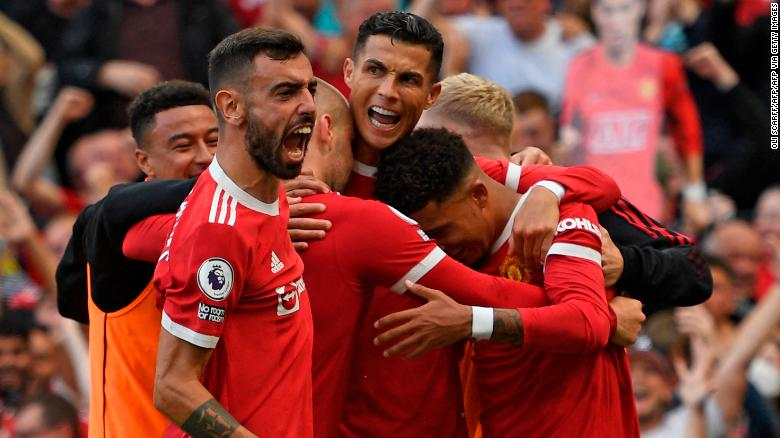
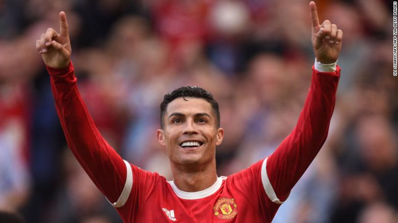

Cristiano Ronaldo scores two goals on his return to Manchester United
Cristiano Ronaldo scored two goals during his first game back at Manchester United on Saturday against Newcastle United in the Premier League.
By Ben Morse, CNN
It was the game all Manchester United fans wanted to see: the return of Ronaldo. Shirts with his name and the famous No. 7 had flown off the racks and the Old Trafford stands were full of fans hoping for a glimpse of the five-time Ballon d'Or winner. The excitement grew further when, an hour before kickoff, it was announced that Ronaldo would be starting.The roar that welcomed him on the pitch ahead of kickoff almost lifted the roof of the famous stadium, and Ronaldo's first few touches in the red kit of Manchester United were cheered as if he had scored. The fans only had to wait until just before halftime to get what they'd come to see: Ronaldo scoring once again for their club.
In celebration, Ronaldo delighted fans by performing his now customary celebration, where he jumps, spins and thrusts his arms out while exclaiming, "Siuuu." But after halftime, Newcastle showed they weren't going down without a fight.
Managed by former United player Steve Bruce, some slick counterattacks threatened to level the game, before Manquillo's low finish did eventually restore parity. It didn't last long though, as Ronaldo once again displayed why he's the top goalscorer in men's international football.
A fan holds aloft a 'CR7 Welcome Home' sign up during the match between Manchester United and Newcastle. Some good work from England international Greenwood resulted in Newcastle Freddie Woodman saving the attempt, only for it to fall at the waiting feet of Ronaldo, to score his first goal for the club 12 years and 124 days.
In celebration, Ronaldo delighted fans by performing his now customary celebration, where he jumps, spins and thrusts his arms out while exclaiming, "Siuuu." But after halftime, Newcastle showed they weren't going down without a fight.
Managed by former United player Steve Bruce, some slick counterattacks threatened to level the game, before Manquillo's low finish did eventually restore parity.
It didn't last long though, as Ronaldo once again displayed why he's the top goalscorer in men's international football.
Visit CNN.com/sport for more news, features, and videos A slick through ball from Luke Shaw fell at his feet, which he powered between the legs of Woodman in goal for his second goal of the game. A wonder strike from Fernandes extended the lead to two before Lingard made it 4-1. Manchester United manager Ole Gunnar Solskjaer, a former teammate of Ronaldo's, lauded the combination of his two Portuguese stars.
Cristiano Ronaldo is set to re-sign for Manchester United subject to personal terms, visa and a medical assessment, the club announced on Friday.
The Premier League giant said an agreement had been reached with Juventus for the 36-year-old, who scored 118 goals in 292 games during his first spell at Old Trafford. "Everyone at the club looks forward to welcoming Cristiano back to Manchester," read a short statement from the club.
The five-time Ballon d'Or winner enjoyed six successful years at Manchester United, winning three league titles and one Champions League, before joining Real Madrid in 2009 for a then world record fee. He is now set to reunite with former teammate Ole Gunnar Solskjaer, who praised Ronaldo earlier on Friday prior to the agreement.
"Cristiano has been a legend of this club, he is a legend of this club, he's the greatest player of all time, if you ask me," the United manager said during a news conference.
 Earlier on Friday, Juventus manager Massimiliano Allegri said Ronaldo would not play for the Italian club again after saying he wanted to leave.
Reports had linked Ronaldo with a move to United's fierce rivals Manchester City but a deal never materialized. Ronaldo won the Serie A title in his first two seasons with the Old Lady but was unable to lead the Italian club to the Champions League title -- a competition he won four times with Real Madrid.
Juventus finished fourth last season and speculation over Ronaldo's future had been swirling ever since with less than 12 months left on his contract. "Today, I depart from an amazing club, the biggest in Italy and surely one of the biggest in all of Europe," Ronaldo wrote on Instagram after news of the agreement broke.
"I gave my heart and soul for Juventus and I'll always love the city of Turin until my final days." He added: "In the end, we can all look back and realize that we achieved great things, not all that we wanted, but still, we wrote a pretty beautiful story together."
Lionel Messi surpasses Pelé to become South America's top international goal scorer in men's football
Details of the agreement are yet to be revealed but the news sent shares of Manchester United, which is publicly traded in the United States, surging 8%. Ronaldo joins Jadon Sancho and former Real Madrid teammate Raphael Varane as United's new summer signings as the club bids to drag itself back to the top of European and domestic football.
The team has started the season in mixed form, winning its first game against Leeds 5-1 before a disappointing draw against Southampton, and the addition of Ronaldo could give the side a huge boost of experience.
The forward is considered one of the best players in history and has won more than 30 major trophies during his career.
During Euro 2020, he equaled the all-time international goalscoring record of 109 international goals set by Iran's Ali Daei. Manchester United captain Harry Maguire wrote a message on Twitter reacting to the news, writing "Welcome home Cristiano."
 The trophy, which Argentina won in July with a 1-0 victory against Brazil, was Messi's first for his country.
"I was really looking forward to enjoying this. I waited a long time for this, I looked for it and I dreamed it. It's a unique moment for how it came about, after waiting so long," Messi said about celebrating the Copa América victory with fans. "There's no better way to celebrate it than being here. My mom and my brothers were in the stands ... they suffered a lot and, today, they're here celebrating. I'm so happy."
Following the victory against Bolivia, Argentina is now second in South America's World Cup qualifying group for Qatar 2022 on 18 points from eight games, behind Brazil on 24.
Messi scored his first goal for Argentina in 2006 in a friendly against Croatia. Of his 79 international goals, 35 have come in friendlies, 25 in qualifiers, 12 in Copa Américas and six in World Cups.
Brazil's Marta is the top South American scorer with 109 goals for the women's team. Earlier this month, Portugal's Cristiano Ronaldo became the top international scorer in men's football with his 111th goal, surpassing the previous record of 109 held by Iran's Ali Daei.
Ahead of this season, Messi moved to French side Paris Saint-Germain in a bid to win the Champions League, ending his long-term association with Barcelona. "It's good for French football, for the league, for the media, for the spectators," AS Monaco midfielder Cesc Fàbregas, who played alongside Messi at Barcelona, told CNN Sport's Amanda Davies of his former teammate's move earlier this week.
"I think everyone is really excited about it. Obviously, he's an icon wherever he goes. I think it was also unexpected so that makes it even better." Fàbregas also said that he never expected Messi to leave Barcelona, adding: "I didn't think that this day would come. I've experienced many things in football, things that you cannot even imagine and some of them are very unexpected."